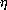

-calculus.
-calculus is simple
-calculus.
-calculus is simple  -reduction is our basic computation mechanism-calculus to the Java
Virtual Machine
-reduction is our basic computation mechanism-calculus to the Java
Virtual MachineComputer Systems generally inhabit a less challenging environment than bridges do, so one might reasonably expect that they would fall down less often. The central challenge of Computer Science is that the contrary is the case. Experience in other engineering disciplines would suggest that what is required is the specification and construction of computational systems within a framework that supports analysis.
Given the need for computational systems to be analysable, the question arises "how to strike a balance between what is analysable and what is practicable". For example, a vast corpus of material is written in the C language which supports analysis very poorly indeed; however C has proved to be a practical basis for the construction of systems at an early stage in the development of our discipline.
In this seminar, by contrast with C, we will look at one
particular
approach to creating software which makes analysability central, namely the
Functional approach to Programming Language Design. This approach is based
on desigining languages which have a close formal relation to the -calculus.
So, to elaborate, we will:
Generally the application of computers to engineering design is somewhat ahead of their application to software design. In particular it is common for engineers to use a tool such as Mathematica or Maple to assist in performing an analysis of the behaviour of a system before it is implemented. In this seminar we'd like to explore how functional languages can be used to address this gap by supporting detailed mathematical analysis of program behaviour.
In implementing programs it is common enough to employ what might be called "macroscopic" tools to analyse the behaviour of a program at a rather coarse level of detail. The most widely used such tool is the concept of data type which is built into most programming languages. Type-analysis will tell you that x+"fred" is an illegal expression (in most languages) because you can't add a number to a string. It won't tell you that you have made an error if you have written x+1 when you meant x-1.
On the other hand, Mathematica can tell you precisely that - for example if you want a solution of the equation x2+2x+1, Mathematica can determine that x=1 is not a solution of that equation (or of course it can solve the equation for you).
But computer programs in general are opaque to the sort of analysis that Mathematica and Maple can perform. Before we can even begin to prove that a program is correct, we have to characterise the behaviour of the programming language in which the program is written. Functional programming languages are characterised in a particularly simple way: every component of a program is treated as a mathematical function whose meaning follows the simple rule that within a given context identical expressions have identical values.
To give an example of what we mean, in a pure functional language a mathematical identity like:
fred(x) + fred(x) = 2*fred(x)
should hold. This is not necessarily the case for a non-functional
language, for example in Pascal or C fred might be a procedure
which had a side-effect, so that calling it twice has a different effect
from calling it once. For example fred might contain the
assignment g:=g+1 where g is a global variable. Thus
the value of fred(x) varies with the number of times it has been
evaluated.
If you ask a mathematician "what, fundamentally, is a function", he is likely to talk about a set of (argument,value) pairs. He may well characterise the relationship between arguments and values in some way that he regards as adequate, without any guarantee that there is any way, given an argument, of computing the corresponding value. For example, mathematicians can (and do) speak of a function f defined on the real numbers for which f(x)=0 when x is rational, and f(x)=1 when x is irrational. But any attempt to implement such a function computationally would require us to solve undecidable problems.
[Note that, while some programming languages refer to floating-point numbers as "real" numbers, they are in fact only crude approximations, quite inadequate for representing this particular function f.
An accurate representation of reals would require a given real to be represented as an infinite sequence of rationals. One can only implement such a thing computationally as a program, so that deciding if a particular real, so represented, is equivalent to a rational, is about proving whether the program that represents the real produces the same output as a program that produces a constant rational. This is an instance of a class of problems known to be undecidable. ]
This kind of approach is fine for mathematicians, who are usually not too concerned about whether they can actually construct the entities of which they speak. As computer scientists we need some mathematical way of characterising functions which, as a formalism, guides us exactly into something we can realise as a computation.
The generally agreed solution to this requirement of constructability of
functions is to use as our basic formalism the -calculus, invented by Church, the American logician,
circa
1940. It was developed as a branch of mathematics, rather than as a
programming language (antedating all programming languages), and was thus
defined essentially as marks on a piece of paper. However it is very easily
represented in a computer. The -calculus is capable of
expressing any computation, like a Turing machine, but, unlike a Turing
machine, it can be made the basis of elegant and powerful computer
languages.
One of the conceptual problems that beginners in formal logic, and
the -calculus is a formal logic, face is the `bootstrapping conundrum', namely
that we are trying to build a very formal system using our less formal
ideas of ordinary mathematics, which were, in our teens, build using the
even less formal ideas expressible in natural language. There is probably
little that can be said except to point out that there is a computational
analogy - if for example we want to build a super-secure computer system,
it will depend on using less-secure tools, and ultimately on hand-crafted
machine code which is not secure at all. Nevertheless, by careful checking
and cross checking, and incorporating tests for consistency, we can build
systems in which we trust.
-calculus Most programming languages have a quite complex syntax that can take
days or even weeks to learn. The -calculus has an
exceedingly simple syntax. The syntactic definition given below is
intended to emphasise the role of the -calculus as a
basis for programming languages. We use a bold font for non-terminal
symbols of the syntax (for example E1).
The -calculus consists of a set of
expressions.
A countably infinite set of variables. We shall use as variables any sequence of letters, digits or the "_" character which begins with a letter, or any sequence of the "sign" characters,
A set of constants. In our case these will be
If E1 and E2 are expressions of
the -calculus, then the application of
E1 to E2 is written
(E1E2), and is an expression.
-abstraction:
If v is a variable, and E is an expression
of the -calculus, then the abstraction
v. E is an expression of the -calculus.
The expression E is referred to as the body of the
abstraction v.E
Basically, that's it! We can begin to give some meaning to this syntax, providing some explanation of what a given expression denotes. Doing this systematically will take quite a bit of work, but roughly we can say:
A variable v is a symbol which (eventually) has an
associated value. Variables in the -calculus
play much the same role as identifiers in a programming language. We'll see
exactly how quite shortly, when we talk about -reduction.
Among the constants, the natural numbers are self-explanatory -
a given sequence of characters such as 123 denote a natural
number, using the base-10 convention. Note however that a
maximally-faithful computational representation of the -calculus will require us to use arbitrary precision
arithmetic so that the only limit on the size of a natural number will
be the storage capacity of the machine.
The boolean constants should also be self-explanatory.
The System constant serves to provide an interface to the built-in capabilities of the computer and its software. For example, the expression (System '+') evaluates to a function which performs addition. Don't be alarmed about the cumbersome nature of this - normally we make sure that the value of the variable + is bound to (System '+').
The purpose of quoted expressions is to support the ability to mechanise
reasoning about the -calculus within the calculus itself.
An application (E1E2) can be thought
of as meaning "apply the function E1 to the argument
E2", as, for example, we may apply the function
sin to the argument 0 when we write the expression
sin 0 in mathematics. Likewise, in the -calculus, if the variable
abs has as its value the absolute-value-function, then
(abs x) denotes the absolute value of the value denoted by the
variable x.
But, you may say, most people want to have functions that take more than one argument - how is this accomplished? Let's consider addition, and in a context in which the variable + denotes addition. The sum of two natural numbers 5 and 3 can be expressed as ((+ 5) 3) - we understand this as meaning that the expression (+ 5) evaluates to a function we can call "add 5". This function is then applied to 3, obtaining 8.
An abstraction v.E can be thought of
as meaning "that function which maps the variable v to the
expression E. Remember that E is an expression, in which
v may, and usually will, occur.
For example, v.v means "that function which
maps v to itself", that is to say, the identity function.
Likewise, in a context in which + denotes addition, the expression
x.((+ 5) x) means "that function which maps
x to 5+x", that is the function "add 5". Note that we
have already encountered this "add 5" function in a different form above.
We shall address the issue of what it means for these two expressions to
denote the same function when we consider the -equivalence
rule below.
As defined above, complex expressions in the -calculus would have a great many parentheses. To avoid
the confusion to the human reader that all these parentheses create,
it is conventional to write an expression of the form
v.(E1E2...En))
as ( v.E1
E2...En),
or even to
omit the outer parentheses if that can be done without ambiguity.
The
convention about the syntactic scope of a -abstraction
is that it extends as far to the right as possible. Thus
v.E1
E2...En v.E1
E2...En) v.E1)
E2...EnNote that application is not an associative operation, so that
E1 (E2 E3) is not the
same as
(E1 E2) E3. Note also
that in the -calculus every function takes exactly one
argument, which is why the basic form of the abstraction is v.E, with just one variable v. However,
provided we remember this fact, it is syntactically convenient to write
v1 v2 . E
v1 .
v2 . E
-calculus A word of warning is needed here to readers who are familiar with the
LISP language, or any derivative such as Scheme: It would appear that LISP
was inspired by the -calculus, but is certainly not an
exact implementation of it, despite the significant syntactic
similarity. Thus the LISP S-expression (u v w) does not
mean ``apply u to v and then apply the result to
w, as it would in the -calculus.
However more modern functional languages which on the surface appear
more remote from the -calculus, are in fact much
closer. For example the SML expression:
fn x=> x*x;
is quite a faithful representation of the -calculus
expression x. (* x x).
-reduction: Our Basic Computation MechanismAbove we stated that the abstraction
v.E
could be understood as meaning "that function which maps the variable
v to the expression E".
We can give a practical meaning to this statement by defining exactly what
it means to apply a -expression to an argument.
Consider the application
x. (+ 5 x)) 22)We've said that
x. (+ 5 x) means "that function which maps
x to (+ 5 x)". So, if we give it an argument 22 we should expect
to get (+ 5 22) as the result. That is to say, we have
substituted 22 for x in the body of the expression.
To make this precise we have to define what we mean by substitution. We need a little notation first. We'll say that
-abstraction occurring
inside E1; this isn't the only complication. We'll defer
the full definition of substitution until later.
The process of converting the application of a
-abstraction to an argument by substituting the argument for the variable
of the abstraction in the body of the abstraction is called "-reduction". We write
x.E1)E2
 E1[x:=E2]
E1[x:=E2]
For example, ( x. (+ 5 x)) (+ 2 3)
(+ 5 (+ 2 3))
There is no requirement that the argument of the application
should be "worked out" before a -reduction is done. So,
in the above example, we don't work-out that (+ 2 3) is 5
before doing the -reduction - indeed such "working out"
is treated by another mechanism,  -reduction, discussed
later.
-reduction, discussed
later.
If we take the -calculus as specified above and
throw out the constants, we obtain the pure
-calculus. It turns out that the pure calculus is
theoretically adequate to specify any computation in much the same sense
that a Turing machine is adequate. This is achieved by using -reduction successively to transform a computation expressed
as an expression of the -calculus into another
expression which is the result of the computation.
Mathematicians, who as a class have swallowed Occam's razor hook line
and sinker, may be satisfied with the pure calculus. [The author
trusts that his mixed metaphors will not give his readers
indigestion.]
However, as a model for practical computation, it is
inadequate. In the pure calculus, for example, one can represent the number
3 as a -abstraction
f x. f(f(f(x))).
This is similar to the use of the Peano postulates in your Discrete
Mathematics course to do arithmetic. You'll remember that 2+1 = 3 is
rendered as:
-calculusThe
-calculus serves as a mathematical specification
for the design of functional programming languages. However, design of an
actual language gives rise to complications, syntactic and semantic. The
syntactic complications serve one main purpose, namely to assist human
comprehension of a program written in a language. We have already seen two
such concessions to human frailty in the suppression of unnecessary
parentheses and 's.
Another feature of programming languages that is something of a historical accident is that a program is usually composed using only ASCII characters.
Within the constraint of using ASCII, most functional languages make further concessions to perceived human need by adopting syntactic conventions that approximate to normal mathematical usage. For example most functional languages will allow the user to render:
(+ u (* v w))
as
u + v*w
Provided that it is a translation of such syntax back to the -calculus
is rigorously defined, there is no objection to its use.
There are a number of conventions for rendering -abstractions in ASCII. The one we will prefer is that used
in Haskell. The abstraction v.E
is rendered
in ASCII as \v.E where E
is the rendering of
E.
For example our old friend x. (+ 5
x) is rendered as
\x. 5+x
-calculus that might seem to be an
occasion of distress is that there is no apparent way of creating named
procedures as we can in most programming languages. For example in C
we can write:
int f(int i) {return(5+i);}
creating a procedure named "f" that we can use elsewhere in our progam.
Actually, we can do this kind of thing in the
calculus, but in a rather inside-out kind of way. Suppose we wanted to use
the C function defined above to compute f(3)+f(4), which we'd
do as.
void main(); {printf("answer %p\n",f(3) + f(4);}
This
can be rendered in the -calculus as
f. (+ (f 3) (f 4))
(i. (+ 5 i))
-abstraction that is its value. Practical
functional languages provide at least one syntactic form that addresses
this problem. In our case we'll write:
let f = \i. 5+i in (f 3) + (f 4) end let
-calculus to the
JVMThe Java Virtual Machine, while intended primarily to support the Java language, provides something of a generic target architecture for compilers. In this seminar we will aim to create an implementation of a simple functional language which runs on the JVM. While we will create Java classes directly, without using the Java compiler, we can readily specify what these are by making use of Java syntax itself.
Our language will have
the basic data-types of the Scheme language together with certain types
which are designed to support proof of correctness of programs written in
the language. However, while we will support Scheme data-types, the
language itself will be a more rigorous implementation of the
-calculus than Scheme is. The main data-types will each
be a Java class.
The following is an interim specification of some of the types. It is to be understood that these will be suitably located in the Java class hierarchy.
n1.add(n2) adds the numbers n1 and n2
n1.sub(n2) subtracts n2 from n1
n1.mult(n2) multiplies n1 by n2
n1.quot(n2) divides n1 by n2, raising an exception
if n2=0
n1.div(n2) divides the integer n1 by the integer n2,
raising an exception if either is not an
integer.
n.from_int(i) Converts a member of the Java int type into a
Number
Pair.cons(x,y) This constructs a new pair with fields x and y
x.front If x is a pair, this selects the contents
of the first field the pair contains.
x.back If x is a pair, this selects the contents
of the second field the pair contains.
-calculus.
-expression is translated into a
procedure object which is the unique member of a class created
as part of the compilation of the -expression.
Procedure objects have applymethods. For example, the most
direct translation of (add 5 x) in the -calculus would be
(add.apply(Number.from_int(5))).apply(x)
where add is a procedure-object. However, a somewhat more
optimised version of this would use a binary-apply-method apply_2
add.apply_2(Number.from_int(5),x)
Further optimisation is possible, e.g. to Number.from_int(5).add(x), or even 5+x (if our compiler were convinced that x was adequately represented by one of the basic types of Java). In fact, the method-definition for add will enshrine the fact that
add.apply_2(x,y) = x.add(y)
In particular, we'll create a particular procedure-object System
with the property that for any symbol s, System.apply(s)
is a built-in system capability. For example
System.apply(Symbol.from_string("+"))
evaluates to the addition procedure object discussed above.
The -calculus was intended as a kind of Mathematical
Logic, and we shall use it as such to construct proofs about
programs in our language within our language. Essentially the idea
is that since the -calculus provides the definition of
our language, we can require that any implementation obeys the laws of the
calculus, together with additional laws which characterise the behaviour of
the built-in System capabilities.
For example, suppose we want to prove that a sorting function that we
have written, say merge_sort,
is correct. Then since we are operating within
the functional paradigm, merge_sort
should be exactly equivalent to an
expression of the -calculus. What does it mean to say
that merge_sort is correct? There are two criteria:
(merge_sort l)
is sorted. How do we render this English requirement into a formalism?
Well it's fairly easy to write a function sorted that determines
if a list is sorted - a list is sorted if it is empty, or contains
one element, or if the first two elements are in order and tail of the list
(everything but the first element) is sorted. So our requirement can be
expressed as
Proving that programs are correct at the level of detail to which we aspire is an undecidable problem, for our approach is in effect to show that two different programs always produce the same result when given the same data, which is known to be undecidable if taken over a wide enough class of programs.
However, there is nothing in the undecidability result which says that it is impossible to prove that a particular program is correct. So, it is reasonable to attack the problem of proof with a combination of human ingenuity controlling a collection of inference rules provided as functions in the language itself.
Practically, this can be realised by using an abstract data-type Theorem with the property that the only ways a language-user can get hold of a theorem are guaranteed to ensure the validity of the theorem.
A theorem has two essential components, its premises and its conclusion. Our theorems will also carry a history with them. A theorem prints as
premises |- conclusion
For example, we might have
Integer.? x, Integer.?y |- x+y = y+x
Which states that it doesn't matter whether you add x to
y or y to x.
If there are no premises, then we write simply
|- conclusion
For example we require:
|- x = x
The meaning of theorems is a bit tricky to define. Essentially, the premises are a sequence of things that look like terms of the -calculus, while the conclusion is one of these term-like things. Notionally, the premises and conclusion "evaluate" to one of the values "true" or "false", and we require of our theorems that if all the premises "evaluate" to true, so does the conclusion.
The tricky bit is that such evaluation is not constructive. This has to be so because we are interested in proving theorems about equality of functions. We'd like, for example to be able to prove that
|- \x. x+3 = \x. 3+x
The conclusion \x. x+3 = \x. 3+x looks like a term of the -calculus, but we can't evaluate it in the ordinary way
we'd evaluate a program. Instead, we have to employ a mathematical concept
of evaluation. In this particular case, the meaning of the equality can be
taken to be that if each of these -abstractions is
given any of a countably infinite universe of objects of values,
the results are computably identical.
Theorems provide arbitration between users and implementors. If a user can exhibit a theorem which says that his program ought to work, and it doesn't, then he has a cast-iron case for complaining to the implementor of the language that his implementation is broken.
(System 'Theorem' 'Axiom' 'Integers' 'C_plus')
will evaluate to the theorem
(Integer.? x), (Integer.? y) |-
((Integer. +) x y) = ((Integer. +) y x)
which states that the built-in addition operation is commutative over the
integers.
(BETA '((\x. 5+x) 20)')
evaluates to
|- '((\x. 5+x) 20)' = 5+20
The BETA function thus creates a theorem which says that an
expression is unchanged in "meaning" by -reduction.
Incidentally, the functional nature of our work is built-in to rules-of-inference. For the reflexive law of equality is one of the primitive rules-of-inference: (REFL 'fred x') evaluates to the theorem
|- (fred x) = (fred x)
But it is simply not true that, in an imperative language such as
C, that fred(x) = fred(x) for a call of an arbitrary function
fred - fred might side-effect a global variable, so evaluations of
fred in apparently identical circumstances can yield different
results.
Definition double = \x. 2*x End;As a result, the system creates an object with the status of a theorem:
|- double = \x. 2*x
However we have no control over the scope of such a theorem - we certainly don't want to get the "double" confused with any one we might want to define locally. This is an issue currently unresolved in the design of POP2000 - it would not however be problematic to ensure in some way that local and global variables have distinct names, when used in theorems derived from definitions.